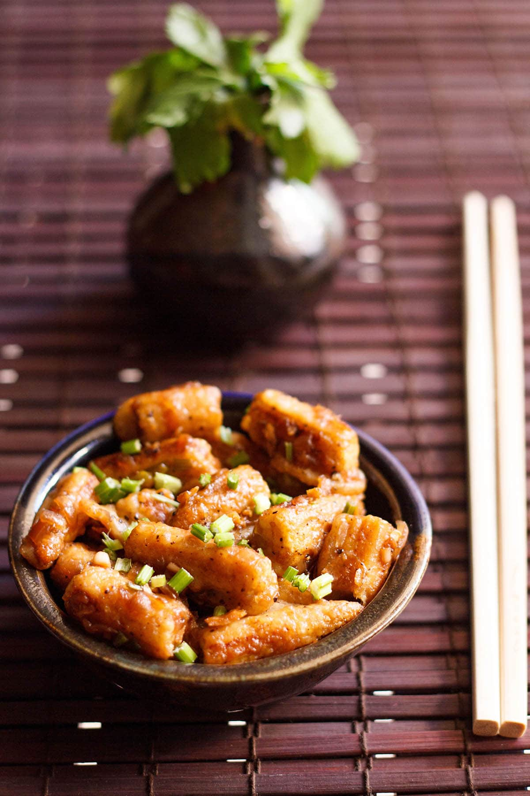
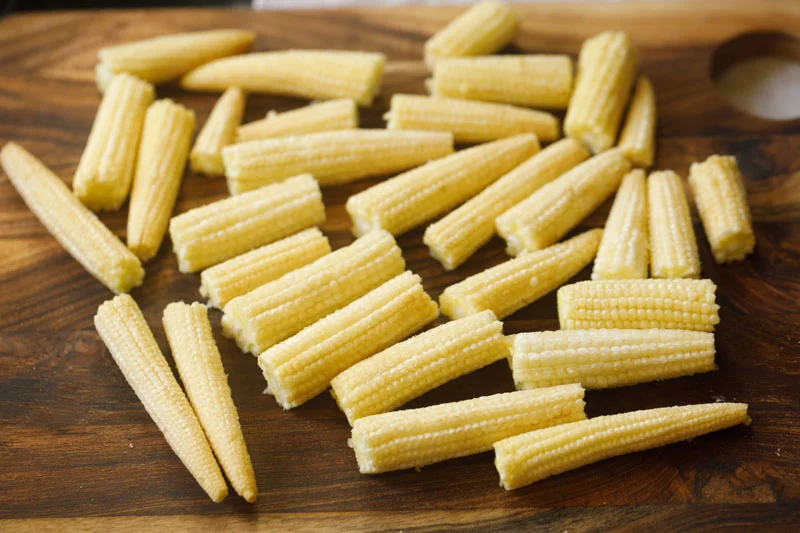
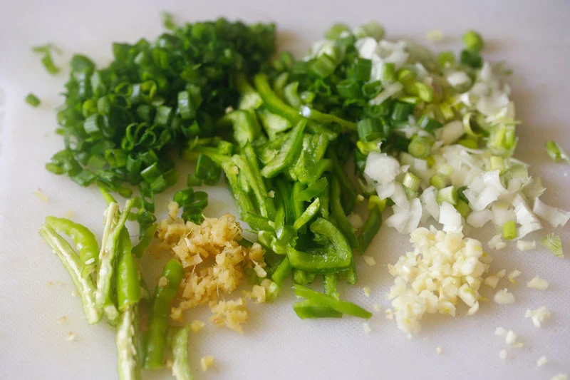
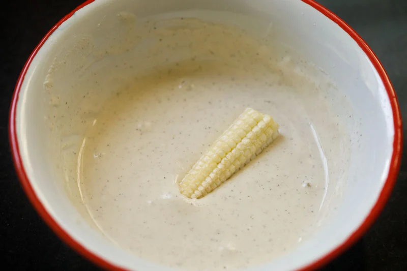
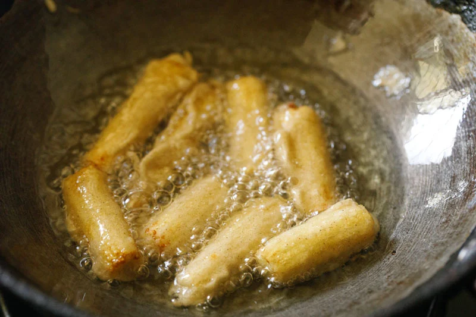
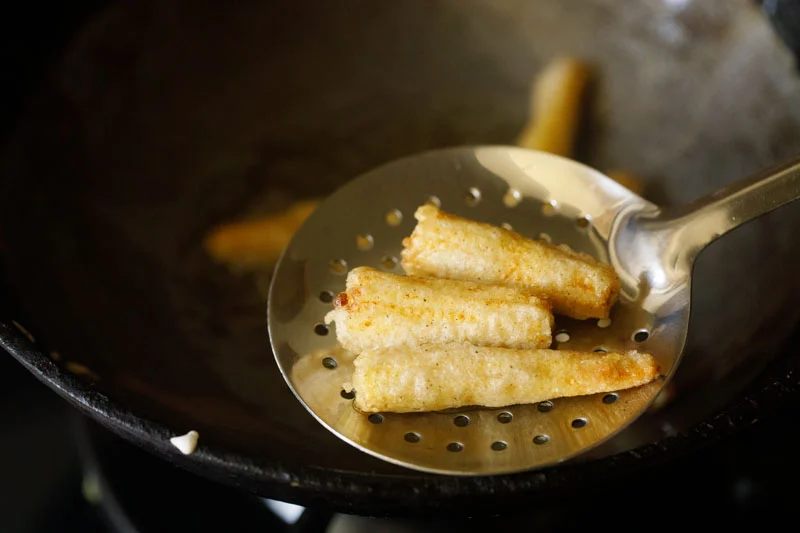
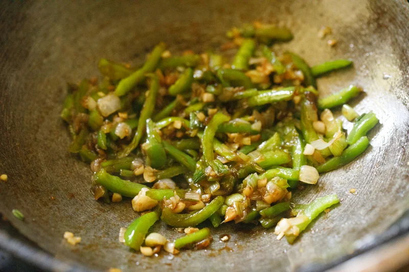
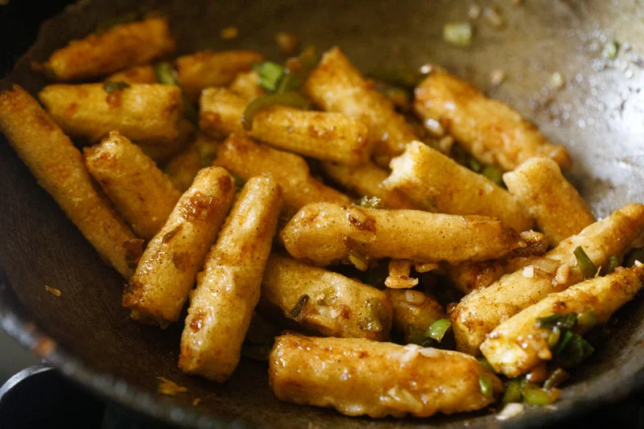
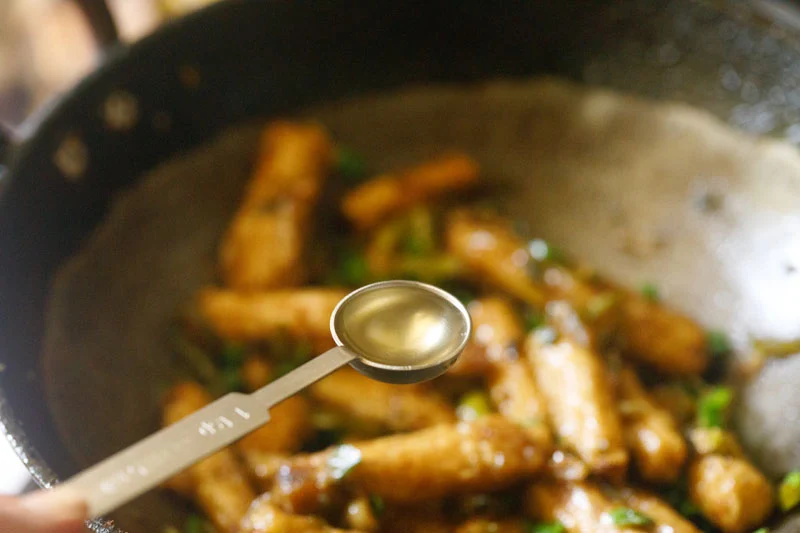
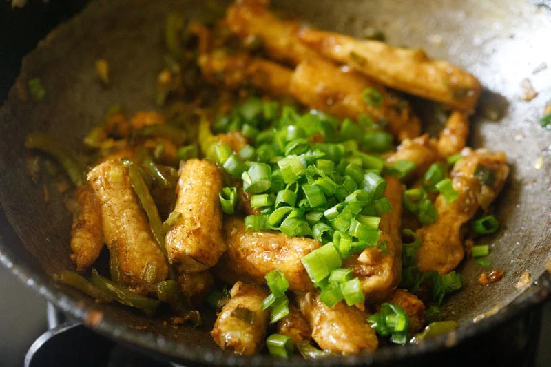

1. First, rinse the 18 to 20 baby corn or 200 grams (about 1 cup) in water. Then drain and pat them dry. If they are long pieces of baby corn, cut them in half.

2. I recommend that you next prepare all of the ingredients for making the fried chilli baby corn sauce: Finely chop 5 to 6 medium sized garlic cloves Peel and chop 1.5 inches of ginger Seed and thinly slice 1 small capsicum (green bell pepper) Slice or slit 2 to 3 green chillies Chop ½ cup of spring onion whites (scallion whites)
3. In a medium-sized mixing bowl combine 4 tablespoons of all purpose flour, 4 tablespoons of cornstarch (cornflour), ¼ teaspoon of black pepper, ¼ to ⅓ teaspoon of salt or add as per taste, and 4 tablespoons of water.

4. Mix well to form a smooth, medium-thick batter.
5. Now add 6 tablespoons of frying oil in a wok or deep, large pan over medium heat. Work one at a time to dip each baby corn piece into the batter to thoroughly coat. Slide the batter-coated baby corn around the edges of the bowl so that excess batter drips back into the bowl.
6. Gently place the batter-coated baby corn pieces in the hot oil. Be careful during this step as the oil can splatter. Note that in the video I have pan fried the baby corn in less oil. You can either pan fry, shallow fry or deep fry.

7. Use a slotted fry spoon to gently turn the pieces over when they become golden.
8. Continue to turn back and forth as needed, until the baby corn pieces are brown on all sides.
9. Remove with the slotted spoon, allowing the excess oil to drain.
10. Set the fried corn on kitchen paper towels. Repeat the frying process with the remaining baby corn pieces.
11. You can use the same oil from frying the baby corn to now fry the aromatics. With a spoon remove extra oil from the pan keeping only 1 tablespoon oil inside the pan. Or, if you prefer, pour in 1 new tablespoon of oil in a new pan. Set the stovetop temperature to medium heat. Once the oil is hot, add the garlic, ginger, green chiles, and the white parts of the sliced spring green onion.

12. Increase the heat to medium-high, and stir fry for 1 to 2 minutes.
13. Now add the sliced capsicum (green bell pepper). If you don’t like or have capsicum, feel free to skip.

14. Mix and continue to stir fry for 3 to 4 minutes on medium-high heat, until the capsicum is half cooked but still crunchy
15. Now reduce the heat back to medium and add 2 teaspoons of soy sauce and 1 teaspoon of either sweet green chili sauce or sweet red chilli sauce. You can add more chilli sauce for a spicier version.
16. Mix well.

17. Taste, and then add ¼ teaspoon of black pepper, ½ to 1 teaspoon of sugar (more or less to taste), and salt as needed.
18. Mix again.
19. Now add the fried baby corn to the pan.

20. Gently mix together, being careful to not scrape the batter from the fried baby corn. Note that you could stop here if you prefer a highly crispy and crunchy baby corn texture. But if you want a smooth glazed sauce coating on the baby corn then proceed to the following steps.

21. Now add 2 to 3 tablespoons of water and mix again.
22. Then sprinkle on 1 teaspoon of cornstarch (cornflour). This gives a lovely, smooth glaze to the dish – just like at your favorite Indo Chinese restaurants
23. Mix well and cook for 1 to 2 minutes, or just until the cornstarch (cornflour) has cooked and is no longer visible.

24. Mix in ½ a teaspoon of rice vinegar for a slightly tangy flavor that brings the whole chilli baby corn recipe together. You can also use apple cider vinegar in place of rice vinegar. If you are not a fan of the tangy vinegar taste then skip it.
25. Lastly, add the sliced green onion tops, and stir again.

25. Lastly, add the sliced green onion tops, and stir again.